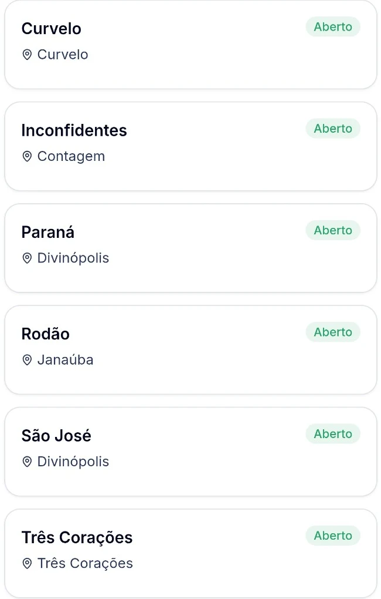

Desconto direto
no abastecimento.
O valor disponível aparece no app ao iniciar o abastecimento. Confira as condições do posto e da oferta.
UM APP. REDES PARCEIRAS. MAIS POSSIBILIDADES.
Para quem abastece, benefícios na rotina. Para quem tem posto, mais motivos para o cliente voltar.

01 / PARA QUEM ABASTECE
Um aplicativo para consultar os postos das redes parceiras e aproveitar os benefícios disponíveis em cada uma.
O valor disponível aparece no app ao iniciar o abastecimento. Confira as condições do posto e da oferta.
Consulte ofertas em troca de óleo, lubrificantes e aditivos participantes, conforme a disponibilidade da sua rede.
Veja os postos participantes no aplicativo e confira a rede ativa antes de utilizar seus benefícios.

SIMPLES NA PRÁTICA
Tenha o Fulltank+ sempre com você.
Consulte as opções participantes no aplicativo.
Identifique a bomba pelo QR Code ou código e siga as orientações do app e do posto.
ECONOMIA QUE VOCÊ CONSEGUE CALCULAR
Faça uma simulação com a sua rotina de abastecimento.
Exemplo ilustrativo com desconto de R$ 0,10 por litro. Não representa oferta garantida. O desconto real varia conforme o posto e as condições do benefício.
LEVE AS VANTAGENS COM VOCÊ
Baixe grátis e consulte os postos e benefícios da sua rede.
02 / PARA DONOS DE POSTOS E REDES
Crie motivos para o cliente escolher seu posto e voltar. Conecte benefícios, relacionamento e acompanhamento da operação com o Fulltank+.
Conhecer para meu posto ↗
Interface real da operação Via Dupla. Valores exibidos são um retrato da operação e não uma promessa de resultado.
Descontos, pontos e benefícios ajudam a construir uma relação que vai além de um abastecimento.
Acompanhe receita, transações, ticket médio e volume no painel, com filtros de período e posto.
Gerencie clientes e recursos de fidelidade em uma retaguarda para sua operação.
clientes na base Fulltank+A base total não representa clientes ativos ou disponíveis em uma região específica.
Seu posto pode fazer parteVAMOS CONVERSAR SOBRE SEU POSTO?
Conte um pouco sobre sua operação e prepare seu pedido de demonstração.
SEM COMPLICAÇÃO
Sim. O download do app é gratuito. Os benefícios disponíveis dependem da rede, do posto e das condições de cada oferta.
Não. R$ 0,10 por litro é apenas a referência da nossa simulação. Confira o valor real no app ao iniciar o abastecimento.
O Fulltank+ funciona nos postos participantes das redes parceiras. Consulte as opções e a rede ativa no aplicativo.
Consulte as regras da rede ativa no app. Não presuma que saldos ou benefícios sejam transferíveis entre redes.
Solicite uma apresentação para conhecer a plataforma, as condições comerciais e os requisitos de implantação para sua operação.